Lektion 2.4 — Teil 2: CSS & Layout
Positionierung & z-index
Lernziele
- Den „normalen Fluss“ (normal flow) einer Seite verstehen
- Die fünf Positionierungsarten
static,relative,absolute,fixedundstickyunterscheiden - Wissen, worauf sich ein absolut positioniertes Element bezieht
- Mit
z-indexdie Stapelreihenfolge steuern - Verstehen, was ein Stacking-Context ist und warum Kinder ihn nicht verlassen können
1 — CSS Position
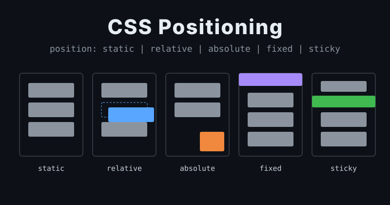
Normalerweise ordnet der Browser alle Boxen im normalen Fluss an:
Block-Elemente untereinander, Inline-Elemente nebeneinander in der Zeile (siehe Lektion 2.2).
Mit der Property position kann man Elemente aus diesem Fluss lösen oder
gezielt verschieben. Zusammen mit position verwendet man die Offset-Properties
top, right, bottom, left und
z-index.
| Wert | Im normalen Fluss? | Bezugspunkt für top/left | z-index? |
|---|---|---|---|
static | ja | – (top/left wirken nicht) | nein |
relative | ja (Platz bleibt reserviert) | die eigene ursprüngliche Position | ja |
absolute | nein | nächster positionierter Vorfahre, sonst Viewport | ja |
fixed | nein | Viewport (bleibt beim Scrollen stehen) | ja |
sticky | ja, bis zur Klebe-Position | Scroll-Container | ja |
2 — position: static
position: static ist der Default. Das Element befindet sich im
„normalen Fluss“ der Seite.
Der einzige Grund, ein Element explizit auf position: static; zu setzen, ist,
eine zuvor angewendete Positionierung gezielt wieder zu entfernen.
div {
position: static;
z-index: number; /* DOES NOT WORK */
}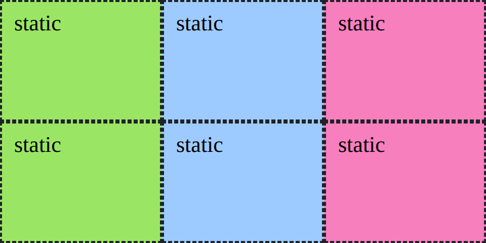
3 — position: relative
Das Element bleibt zwar im „normalen Fluss“, wird aber „relativ zu sich selbst“ verschoben.
- Der freie Platz an der ursprünglichen Stelle kann von keinem anderen Element eingenommen werden!
- Erscheint über jedem static-Element.
- Kann einen
z-indexbekommen. - Absolut positionierte Kind-Elemente werden in Bezug auf das relativ positionierte Parent-Element verschoben!
div {
position: relative;
top: 50px;
left: 50px;
z-index: number; /* OPTIONAL */
}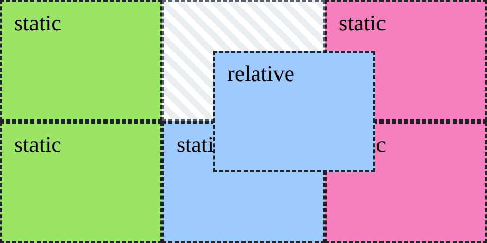
4 — position: absolute
Das Element wird aus dem „normalen Fluss“ genommen und unabhängig verschoben.
- Andere Elemente tun so, als ob das Element nicht vorhanden wäre.
- Erscheint über jedem static-Element.
- Kann einen
z-indexbekommen. - Braucht Inhalt (content) oder
width/height, um eine Größe zu haben. - Wird relativ zum nächsten positionierten Parent-Element (z. B.
position: relative) platziert – oder, falls keines gefunden wird, relativ zum Viewport (0/0).
div {
position: absolute;
top: 50px;
left: 50px;
z-index: number; /* OPTIONAL */
}Fall 1: kein positionierter Parent → „relativ“ zum Viewport
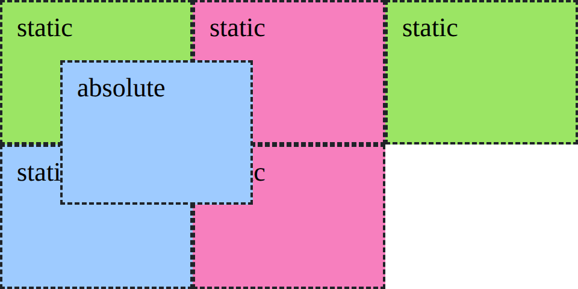
Fall 2: „relativ“ zum nächsten relativ positionierten Parent
<div class="relative">
relative
<div class="absolute">absolute</div>
</div>.relative {
position: relative;
}
.absolute {
position: absolute;
top: 50px;
left: 50px;
}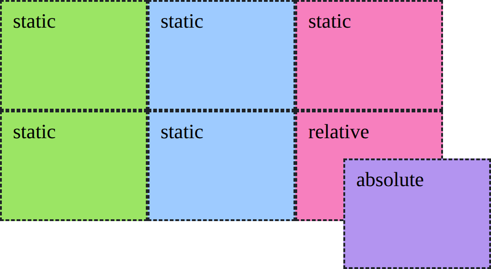
Will man ein Element innerhalb eines anderen frei platzieren (z. B. ein Badge in der
Ecke einer Karte), bekommt der Parent position: relative (ohne
Verschiebung) und das Kind position: absolute.
5 — position: fixed
Das Element wird aus dem „normalen Fluss“ genommen und bleibt auch beim Scrollen an seiner fest definierten Position.
- Wird relativ zum Viewport (0/0) verschoben.
- Erscheint über jedem static-Element.
- Kann einen
z-indexbekommen. - Braucht Inhalt (content) oder
width/height, um eine Größe zu haben.
div {
position: fixed;
top: number;
right: number;
z-index: number; /* OPTIONAL */
}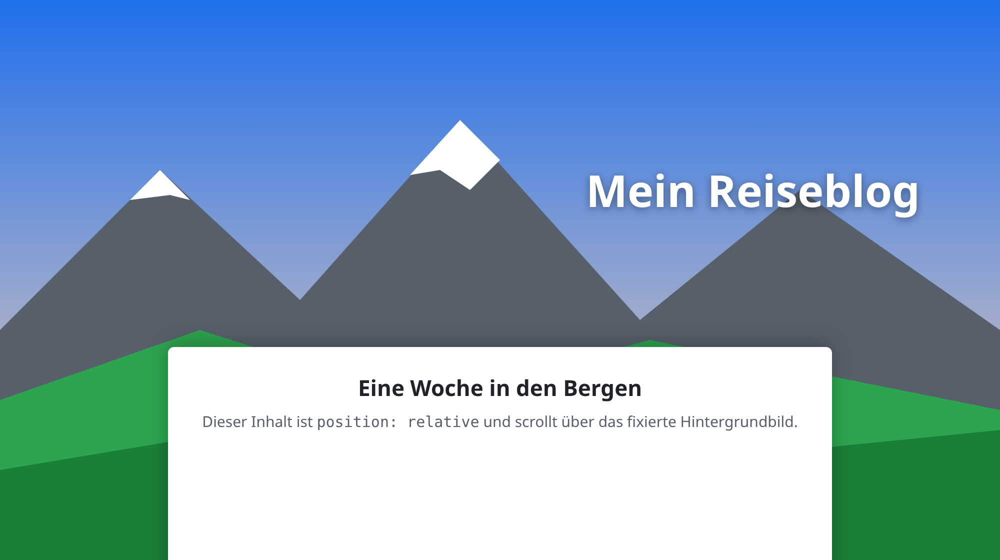
Damit der Inhalt über das fixierte Hintergrundbild scrollen kann, muss er
selbst positioniert sein (z. B. relative). Ein static-Element würde
darunter scrollen – positionierte Elemente liegen immer über static-Elementen.
6 — position: sticky
Das Element bleibt so lange im „normalen Fluss“, bis es beim Scrollen die
top-Position erreicht – dann klebt es an dieser Position fest.
- Klebt fest, sobald die
top-Position erreicht ist. - Erscheint über jedem static-Element.
- Kann einen
z-indexbekommen. - Braucht Inhalt (content) oder
width/height, um eine Größe zu haben.
div {
position: sticky;
top: number;
right: number;
z-index: number; /* OPTIONAL */
}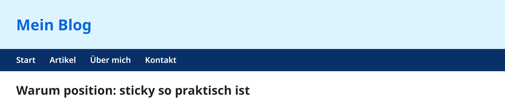
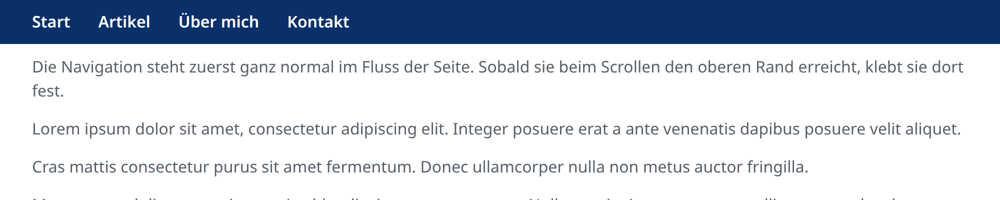
.site-nav { position: sticky; top: 0px; }Ohne top (oder bottom) verhält sich sticky wie
relative. Außerdem klebt das Element nur innerhalb seines Eltern-Elements
– ist der Parent zu Ende gescrollt, scrollt es mit weg.
7 — z-index
Der z-index legt die Reihenfolge eines positionierten Elements
(also nicht position: static) und seiner Kinder auf der
z-Achse fest – also wer über wem liegt. Höhere Werte liegen
weiter vorne, näher bei den Betrachtenden.
div {
position: relative | absolute |
fixed | sticky;
z-index: number;
}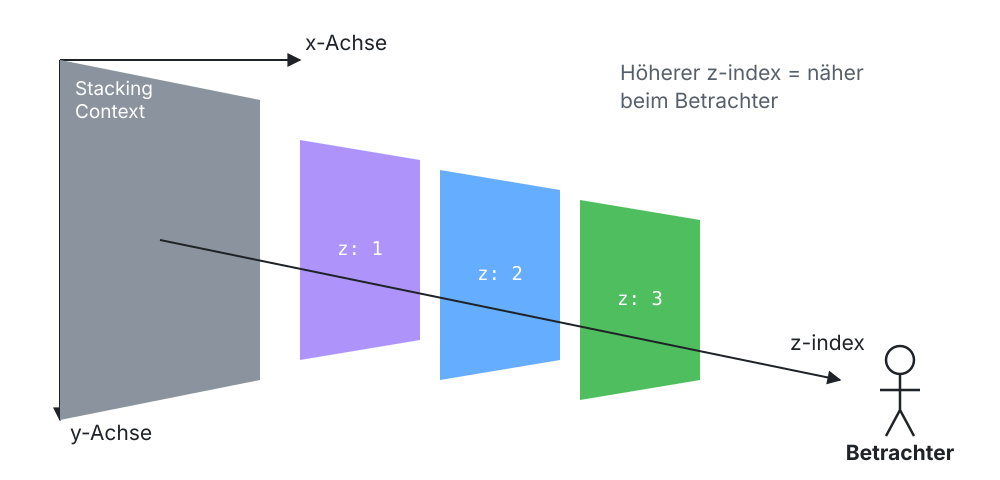
8 — Stacking-Context
Wir erzeugen einen Stacking-Context, indem wir den z-index eines
positionierten Elements auf eine beliebige ganze Zahl setzen. Dabei passieren zwei Dinge:
- Der
z-indexdes aktuellen Elements wird gesetzt. - Es entsteht ein neuer Stacking-Context für das Element und seine Kind-Elemente. Die Kinder liegen nun innerhalb des Stacking-Contexts ihres Parents.
<div class="foo">
<div class="bar"></div>
</div>.foo { position: relative; z-index: 1; }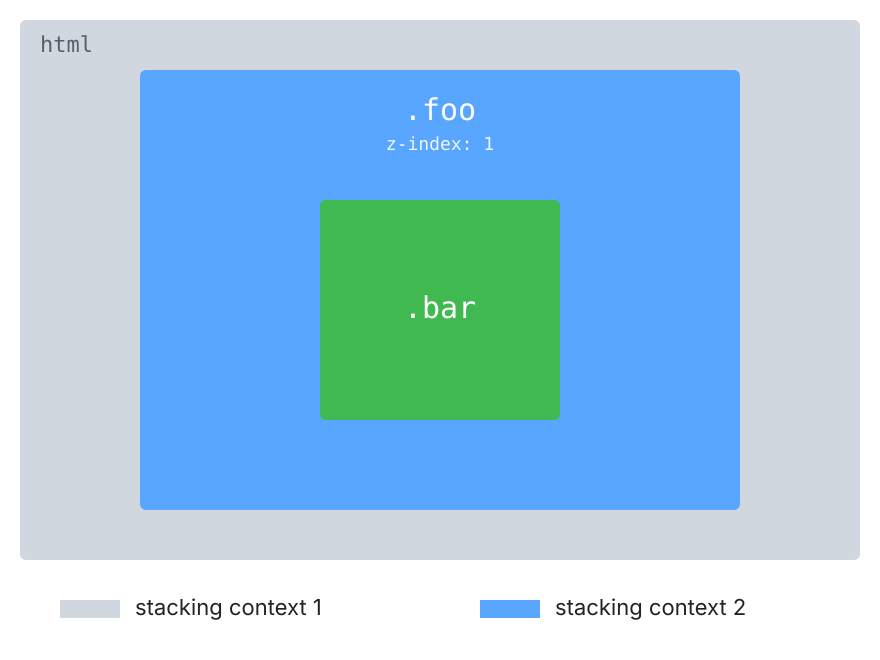
Kinder bleiben im Stacking-Context des Parents
<div class="foo">
<div class="bar"></div>
</div>
<div class="baz">
</div>.foo { position: relative; z-index: 1; } /* grün */
.bar { position: relative; z-index: 1000; } /* blau */
.baz { position: relative; z-index: 2; } /* rot */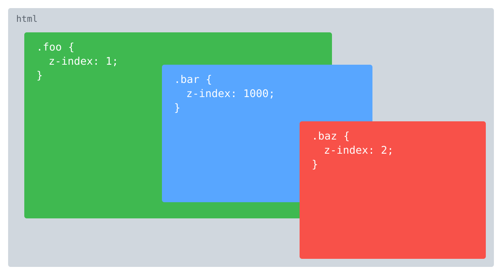
Kind-Elemente bleiben innerhalb des Stacking-Contexts ihres Parent-Elements. Das blaue
Element (z-index: 1000) liegt nicht über dem roten
(z-index: 2), weil sein Parent (grün) nur z-index: 1 hat.
Verglichen werden immer nur Elemente im selben Stacking-Context: grün (1) gegen
rot (2) – rot gewinnt, samt allem, was in grün liegt.
Projektschritt
Sticky Header & „Nach oben“-Link
Der Header klebt beim Scrollen oben (sticky), der „Nach oben“-Link schwebt fixiert rechts unten (fixed).
/* ---- 2.4 Positionierung & z-index -------------------------- */
/* Kopfzeile bleibt beim Scrollen oben kleben */
header {
position: sticky;
top: 0;
z-index: 100;
}
/* "Nach oben"-Link schwebt immer rechts unten */
.back-to-top {
position: fixed;
right: 1.5rem;
bottom: 1.5rem;
z-index: 50;
}
.back-to-top a {
display: inline-block;
padding: 0.8rem 1.5rem;
border-radius: 25px;
background: #95a5a6;
color: white;
font-weight: bold;
text-decoration: none;
}📁 Stand nach dieser Lektion: beispiele/2.4/
Häufige Fehler
Das Badge erscheint ganz oben rechts im Browserfenster statt in der Karte.
Dem gewünschten Bezugs-Element position: relative geben – sonst bezieht sich absolute auf den Viewport.
z-index: 999 auf einem Element ohne position hat keine Wirkung.
z-index funktioniert nur bei positionierten Elementen (relative, absolute, fixed, sticky) – und nur im Vergleich innerhalb desselben Stacking-Contexts.
Die Navigation mit position: sticky scrollt ganz normal mit.
Einen Offset angeben (top: 0) und prüfen, ob ein Vorfahre overflow: hidden hat – das verhindert sticky.
Aufgaben
Baue die Abbildungen dieser Lektion nach: sechs farbige Boxen in zwei Reihen, eine davon nacheinander relative, absolute (mit und ohne relativen Parent) und fixed positioniert.
Gib jeder Karte (.card) der Demoseite ein „Neu“-Badge in der rechten oberen Ecke (position: relative auf der Karte, position: absolute auf dem Badge).
Baue das .foo/.bar/.baz-Beispiel nach. Was musst du ändern, damit das blaue Element über dem roten liegt? Finde zwei Lösungen.
Lege über ein Kartenbild (in einem <figure>) eine halbtransparente Leiste mit dem Kartentitel, die am unteren Bildrand klebt (position: absolute; bottom: 0;).